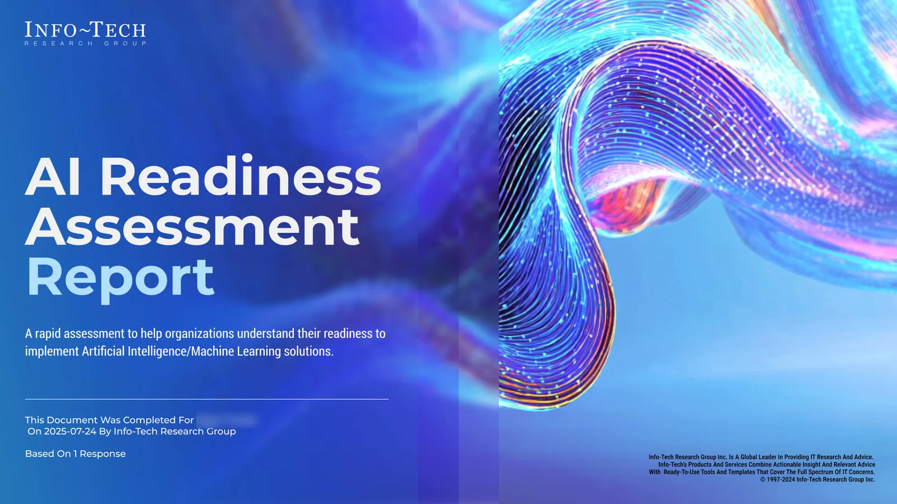
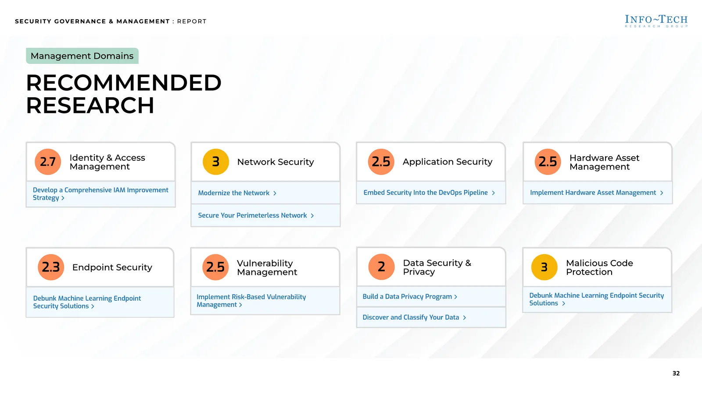
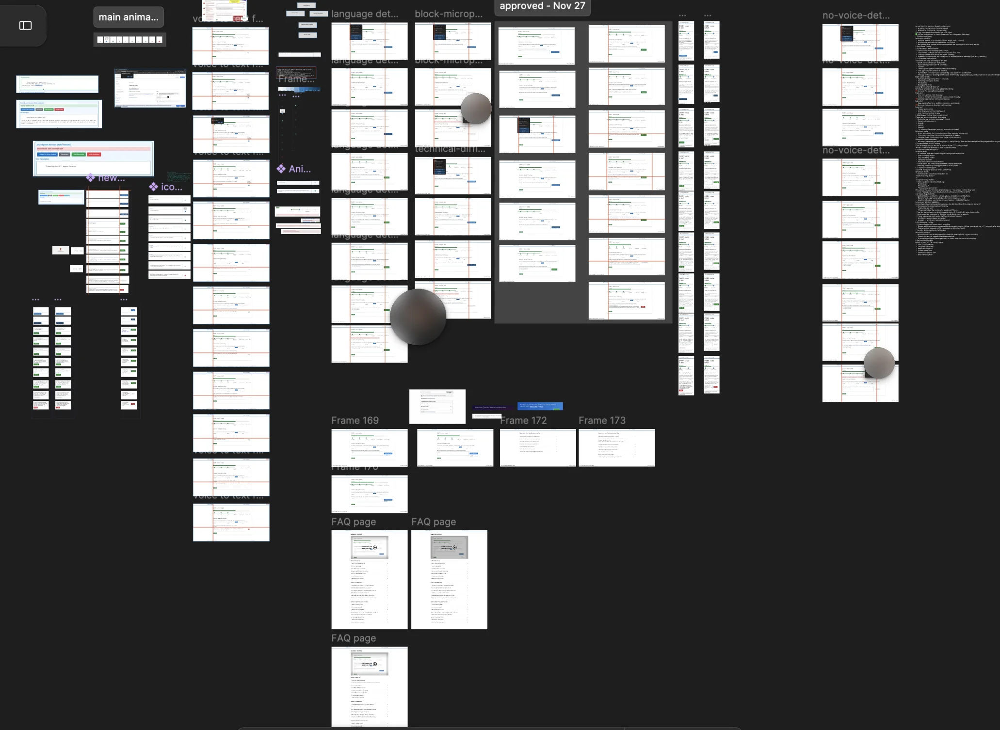

Diagnostics
Surveys and reports that turn diagnostic results into clear findings IT leaders can act on.
- Company
- Infotech
- Timeline
- 2024–2025
- Tools
- Figma · Illustrator · Photoshop
- Format
- Surveys & multi-page reports
About this work
Infotech diagnostics are surveys IT teams complete about how their department runs. Each produces a report that scores them against best practice and recommends next steps.
The reports pack in dozens of scores and benchmarks. I design the layouts, charts and visual system that make them clear and easy to navigate.
Selected reports
Exponential IT Readiness Diagnostic
Compares how ready an organization is for tech-driven transformation with how ready IT is to lead it.
I designed the full report and was partway through coding it when the project was cancelled. Shown with sample data.


AI Readiness Assessment Report
A quick assessment of how ready an organization is for AI, and which AI projects it can take on today.
Leaders rate their organization on five dimensions, from data to people and skills. The report turns their answers into a readiness level, from Exploring to Leading, with next steps for each. Shown with sample data.



The executive summary: overall score, a radar chart of the five dimensions, and every sub-score.


Security Governance & Management Diagnostic
Scores how mature an organization’s security program is across 22 areas and recommends how to improve each one.
Built on Infotech’s security framework (mapped to NIST CSF, ISO 27000 and CIS Controls), with results on a five-level maturity scale. Shown with sample data.



It ends with next steps, each linked to supporting research.
Speech-to-text answers
An accessibility feature for the CIO Business Vision diagnostic, a survey where business leaders rate how well IT supports them. People can speak their answers to open-ended questions instead of typing them.
A CIO Business Vision question with speech-to-text: pressing Stop listening switches the button to Stopping while it finishes. Video has no sound.
Why it matters
Open-ended questions get the most useful answers, but typing long responses is slow, and hard for people with motor or reading difficulties. Speaking lets them answer in their own words.
Designing for what goes wrong
Speech-to-text depends on the browser, the microphone and the connection. I designed a clear state for each case:
- Listening and stopping, so people always know when the mic is on
- Microphone blocked, with steps to turn it back on
- No voice detected, prompting people to try again
- Language detection, so answers come out in the language spoken
- Technical difficulties, when the service is unavailable
Help when it fails
A troubleshooting link beside the button opens a help page with a short how-to video and answers to common problems.
Design to code
I explored icons and animations in Figma, took the design through approval, then built the front end on Azure Speech-to-Text, with WCAG checks for keyboard and screen reader use.


Created for Infotech. Shown with sample data.